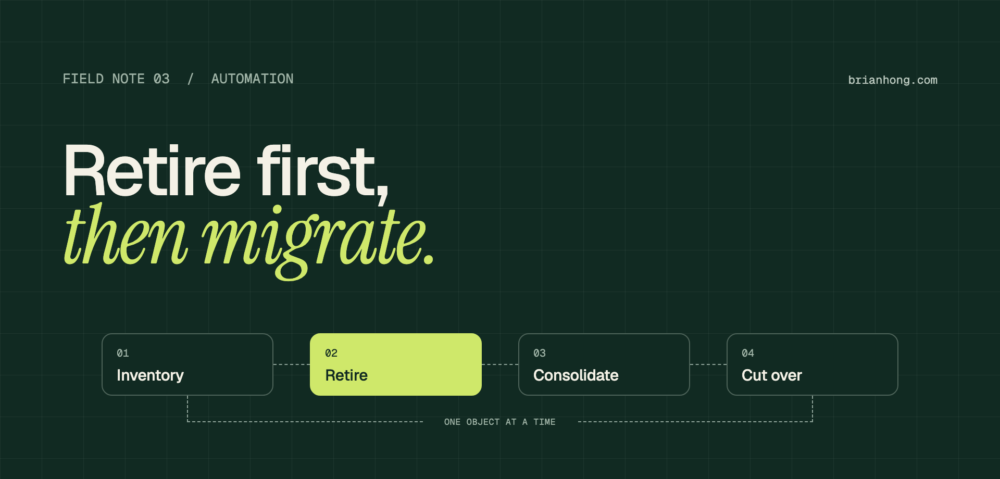

Migrating Workflow Rules and Process Builder to Flow without breaking the org
The Migrate to Flow button is the easy part. The real work is deciding what to retire, what to combine, and how to cut over without anyone noticing.

Most orgs that have been around for a few years carry dozens of workflow rules and a handful of sprawling processes. Nobody remembers who built half of them. They still fire on every save, and some of them send emails to people who left the company.
The tempting plan is to open the Migrate to Flow tool, convert everything one for one, and call it done. That gives you the same mess in a newer tool. You end up with forty flows on Opportunity, no idea what order they run in, and the dead automation is still there.
Migrating Workflow Rules and Process Builder to Flow means replacing each rule and process with a record-triggered flow that does the same job. Done well, it’s also the one time you get to delete what nobody needs and put what’s left in a known order.
What end of support actually means
Salesforce stopped letting you create new workflow rules in Winter ’23 and new processes in Summer ’23. Support for both ended on December 31, 2025. Nothing was switched off that day. Existing rules and processes still run.
What changed is the safety net. Salesforce no longer fixes bugs in either tool, and Support won’t help when one of them misbehaves. Every new platform feature lands in Flow only. So the risk isn’t a deadline. It’s that the automation your business depends on now runs on something nobody maintains.
That’s good news for planning. You have time to do this in order, object by object, instead of in one weekend.
Inventory every rule and process first
You can’t plan a migration from the Setup list views. Pull everything into one spreadsheet, one row per workflow rule and one row per process, grouped by object. Active processes are easy to list with a query:
Workflow rules live in metadata, so retrieve them with the CLI or a metadata tool, or export the Workflow Rules list view. For each row, capture the same six things:
- Object and trigger Which object it runs on, and whether it fires on create, on every edit, or only when the record first meets the criteria.
- Criteria The conditions in plain English. If you can’t explain them in one sentence, flag the row.
- Actions Field updates, email alerts, tasks, outbound messages, record creates, Apex calls. Note which are immediate and which are time-based.
- Last time it mattered Does it still fire? Check field history, email logs, and whether the fields and record types in the criteria are still in use.
- Business owner The person who can say whether it’s still needed. No owner is a finding in itself.
- Dependencies Other automation on the same object: Apex triggers, existing flows, validation rules, and approval processes that share the same field updates.
The last column is the one that saves you later. A field update that looks orphaned is often reused by an approval process. Approval processes still use those actions, so don’t delete them.
Retire, consolidate, or rebuild
With the inventory in hand, give every row one of four outcomes before anyone opens Flow Builder.
- Retire It no longer fires, or nobody wants what it does. Deactivate it, wait a full business cycle, then delete it. This is the cheapest migration there is.
- Replace with something simpler A field update that only copies or calculates a value can often become a formula field or a default value. No automation to maintain at all.
- Consolidate Several rules on one object that do related things become one flow with decision branches. Ten rules that stamp dates on Opportunity are one before-save flow.
- Rebuild as is It’s needed, it’s self-contained, and it doesn’t belong with anything else. Convert it directly and move on.
“The cheapest automation to migrate is the one you delete.”
Then decide the target shape for each object. A pattern that holds up well: one before-save flow for updates to the record itself, and a small number of after-save flows grouped by business function, such as notifications or related-record updates. Give each flow tight entry conditions so it only runs when it has work to do.
What the Migrate to Flow tool does and doesn’t do
The Migrate to Flow tool lives in Setup. You pick a workflow rule or a process, and it builds an inactive record-triggered flow with the same criteria and actions. You test the flow, then switch activations so the flow goes live and the old rule goes off.
It’s useful for the "rebuild as is" pile. It has three limits worth knowing before you rely on it:
- One in, one out Thirty workflow rules become thirty flows. The tool never consolidates, so the design work from the last section is still yours.
- Partial coverage Not every criteria type or action converts. The tool tells you when a rule or process can only be partly migrated. Read that message and build the rest by hand.
- No judgment It converts dead automation as faithfully as live automation. It also keeps the old names, so rename and describe every flow it produces.
Treat the output as a first draft. For anything you plan to consolidate, building the flow from scratch is usually faster than merging generated ones.
How the old concepts map to Flow
Almost everything in a workflow rule or a process has a direct equivalent. Knowing the mapping makes the hand-built flows quick.
| Old | Flow equivalent |
|---|---|
| Rule or process criteria | Entry conditions on the Start element |
| "Created, and edited to subsequently meet criteria" | "Only when a record is updated to meet the condition requirements" |
| Field update, same record | Before-save flow (Fast Field Updates) |
| Update related or parent records | After-save flow, Update Records |
| Email alert | After-save flow, same email alert as an action |
| Task or record create | After-save flow, Create Records |
| Outbound message | After-save flow, outbound message action |
| Time-dependent or scheduled action | Scheduled path on an after-save flow |
| Process criteria nodes, in order | Decision element with ordered outcomes |
| ISCHANGED / PRIORVALUE | "Is Changed" operator and $Record__Prior |
| Process calls Apex or a flow | Action element or subflow |
The split that matters most is before-save versus after-save. A before-save flow can only change fields on the record being saved, and it does that without a second save, so it’s fast. Everything else, including emails, related records, and scheduled paths, needs an after-save flow.
Four behaviors that change
A flow with the same criteria and the same actions can still behave differently from the rule it replaced. These four differences cause most post-migration surprises.
- Where it runs in the save Workflow field updates run late, after validation rules and Apex triggers. Before-save flows run first, ahead of both. A value your old rule set quietly now has to pass validation, and triggers now see it.
- Triggers firing twice A workflow field update makes update triggers run a second time. A before-save flow doesn’t. That’s an improvement, unless some Apex was quietly relying on the second pass.
- Re-evaluation Workflow field updates can re-evaluate other rules, and processes can evaluate a record more than once per transaction. Flows don’t chain that way by default. If rules depended on each other, put that sequence inside one flow.
- Order between flows Several flows on one object run in an order you should set on purpose. Use Flow Trigger Explorer to see them together and give each a trigger order value.
Errors also get louder. A flow that hits an unhandled fault blocks the save and shows the user an error. Add fault paths to elements that create or update other records, and decide for each one whether the save should fail or the error should be logged and the save allowed.
Test and cut over one object at a time
Migrate a whole object in one release, not rule by rule. Running half an object on workflow rules and half on flows is the hardest state to reason about, so keep that window as short as you can.
- Write the scenarios first For each rule, one case that should fire and one that shouldn’t. Record what the old automation does in a sandbox before you change anything.
- Test in bulk Load 200 records with Data Loader, not just one through the UI. Imports and integrations are where flows hit limits.
- Never run both Activate the flow and deactivate the old rule in the same deployment. Both live at once means duplicate emails and double updates.
- Check the time-based queue Look at the time-based workflow queue in Setup before deactivating. Records already waiting there won’t be picked up by the new scheduled path, so plan how those in-flight records get handled.
- Keep the rollback Leave the old rules deactivated, not deleted, for two to four weeks. Rolling back is then two clicks.
- Watch the first week Send flow error emails to a shared inbox someone reads, and review failed flow interviews daily for the first week after each cutover.
Start with a low-risk object to prove the process, then move to the busy ones. If you have a release process already, each object is just another release.
A 12-week migration plan
- Weeks 1–2 Build the inventory. Confirm a business owner for each row and mark every one retire, replace, consolidate, or rebuild.
- Weeks 3–4 Deactivate the retire pile. Agree naming conventions and the target flows per object. Migrate one low-risk object end to end.
- Weeks 5–10 Work through the remaining objects, one per release, busiest last. Test, cut over, and monitor each before starting the next.
- Weeks 11–12 Delete the deactivated rules and processes, document each flow’s purpose and owner, and show leadership the before-and-after count.
Scale the timeline to the org. A dozen rules on two objects is a few weeks. Hundreds of rules across a dozen objects is a couple of quarters. The sequence stays the same either way: inventory, decide, migrate by object, clean up.
The migration isn’t really about Flow. It’s the rare project where you get to read every piece of automation in the org and ask whether it should exist. Take that chance, and you end up with fewer moving parts and a clear order, not just newer tooling.
Frequently asked questions
Do Workflow Rules and Process Builder still work?
Yes. Existing workflow rules and processes keep running, but Salesforce ended support for both on December 31, 2025. That means no bug fixes and no help from Salesforce Support when one of them misbehaves.
Can the Migrate to Flow tool convert everything?
No. The Migrate to Flow tool converts one workflow rule or process into one inactive flow, and it only handles the criteria and action types it supports. It doesn’t retire dead automation or consolidate rules, so treat its output as a first draft.
How many record-triggered flows should one object have?
There is no fixed number. A common pattern is one before-save flow for same-record field updates and a small number of after-save flows grouped by business function, each with tight entry conditions and a set trigger order.
Should I migrate to Flow or to Apex?
Flow is the default for most workflow rules and processes. Consider Apex when the logic is complex, handles very large data volumes, or the object already has a trigger framework that the automation belongs in.